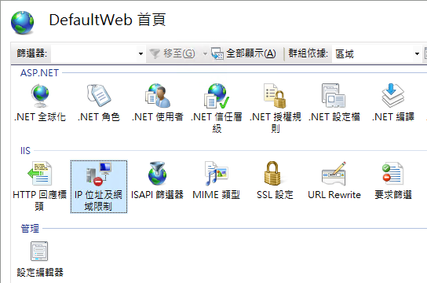
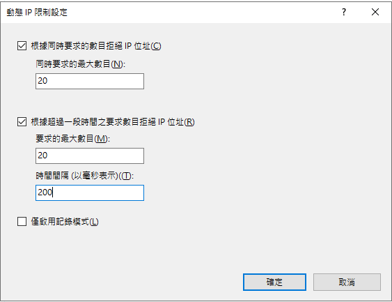
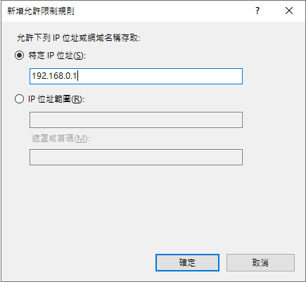

IIS 網站突然狂丟403錯誤！原來是安全性設定在搞鬼
前言
某一天，系統突然開始出現詭異的現象：使用者報告網站時好時壞，重新整理一次可能好，但下一秒又壞了。查看錯誤日誌發現大量的 403 Forbidden 錯誤，但最讓人困惑的是 ，同一個檔案，有時候能載入，有時候卻被封鎖。這到底是怎麼回事？
然後就開始尋找問題可能的原因
1. 檔案/資料夾權限設定問題:
- 確認網站資料夾的 NTFS 權限是否正確
- IIS_IUSRS 和 IUSR 使用者需要有讀取權限
- Application Pool 身份對網站目錄需要有讀取權限
2. IIS 設定檢查:
- 在 IIS 管理員中確認網站的身份驗證設定
- 檢查是否啟用了正確的驗證方式(如匿名驗證)
- 確認網站綁定設定是否正確
結果確認之後都無法解決。
問題的關鍵：動態 IP 限制設定
上面的問題可能原因都檢查之後還是沒發現問題，只能在網站上重新整理了幾次，然後去看IIS的LOG，只能看到有很多403錯誤，但不知道原因，不過發現，原本403的檔案忽然正常了，反而其他的檔案變成403，又重整了幾次，發現每次被影響的都有不同，於是，到這裡大概就知道原因了，這個問題的源頭是 IIS 的「動態 IP 限制」功能。這個原本用來防止DDOS的安全機制，結果反而擋了一般人使用。
讓我用一張圖來說明這個機制是如何運作的：
為什麼會發生這個問題？
現代網站通常需要載入大量的 JavaScript 檔案和其他資源。當使用者訪問網站時，瀏覽器會在短時間內發出多個請求來載入這些資源。如果動態 IP 限制設定太嚴格，這些正常的請求就可能被誤認為是攻擊行為。
解決方案
1. 調整動態 IP 限制設定


這是我原先的設定，可是這樣設定有可能擋到一般人使用，所以基於安全性和可用性的平衡，我修改為以下設定：
「同時要求的動態 IP 位址」：50
原因：考慮到現代網站首次載入通常需要20-30個並發請求
設50可以給予足夠緩衝，避免誤判正常使用行為「要求的最大數目」：100
原因：一般使用者很少在短時間內產生大量請求
設100允許正常的頁面切換和操作「時間週期」：5秒（5000毫秒）
原因：這個時間週期較短，可以更快偵測到異常行為
DDOS通常會在短時間內發送大量請求
2. 設定 IP 白名單
開啟 IIS 管理器
在左側選擇您的網站
找到「IP 位址和網域限制」功能並雙擊
在右側「動作」面板點選「新增允許項目」
輸入要允許的 IP 或 IP 範圍：
單一 IP：直接輸入 IP（如：192.168.0.1）
IP 範圍：輸入網段和遮罩（如：192.168.0.0，遮罩：255.255.255.0）

3. 實作差異化的安全策略
為不同類型的請求設定不同的安全規則：
- 靜態資源：較寬鬆的限制
- API 呼叫：中等程度的限制
- 敏感操作：嚴格的限制
最佳實踐建議
1. 資源優化
- 合併 JavaScript 檔案
- 啟用瀏覽器快取
- 使用 CDN 分流
2. 監控機制
- 定期檢查 IIS 日誌
- 設置異常警報
- 建立緊急應變流程
3. 安全性平衡
- 根據實際需求調整限制
- 定期檢討安全策略
- 保持系統更新
結論
這次的經驗告訴我們，系統安全性設定雖然重要，但過度限制反而可能影響正常運作。找到安全性和可用性之間的平衡點是關鍵。透過適當的配置和監控，我們可以在保護系統的同時，確保使用者有良好的體驗。